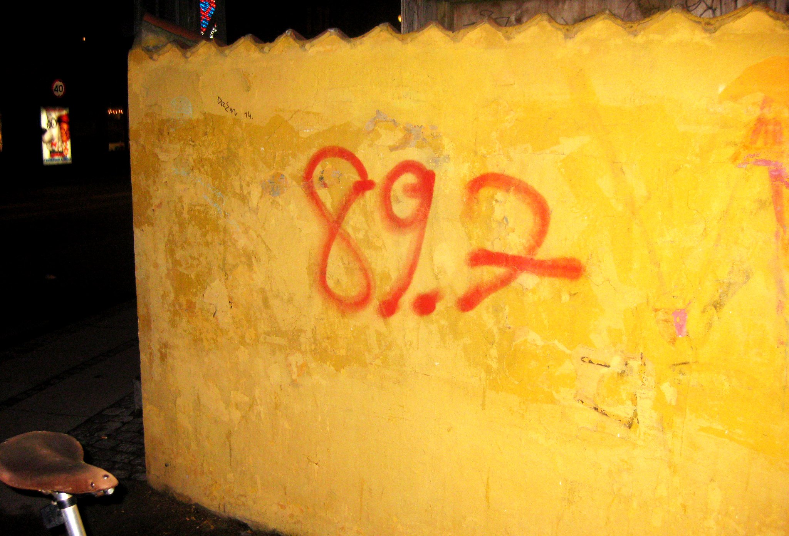

I er Byen, vi er Radioen – Velkommen til Byens Radio:
Med en hjemmelavet antenne og en skraldet transmitter, på en tømmerflåde et hemmeligt sted i København, startede man 1. Januar 2011 med at spille musik fra frekvensen 89,7 Fm.
Uden sendetilladelse og med frivillige kræfter skabte man Københavns nyeste piratradio kaldet ”Byens Radio” Radioen startede som en modreaktion på de ensidige og kommercielle radioer som herskede i Danmark, med undergrundsmusik, demonstrations rapportager, politiske analyser og radioteater ville man skabe et alternativ, der skulle gøre op med de pengegriske radioer der kun vil spille det nyeste sjæleløse intetsigende pop.
I dag er det ikke meget forandret. Den dag i dag laver de kommercielle radio stadig hjernedød tom popmusik. Derfor er der stadig brug for en radio til at erobre byens bølgelængder til de kreative, finurlige, revolutionære og provokerende stemmer.
Vi ønsker forandring og forandringen kommer ikke uden handling.